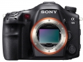

器材库 > 35mm画幅可换镜头数码相机 > α99

规格总览
产品类型
35mm画幅可换镜头数码相机
发布日期
2012-09-12
影像规格
影像传感器
Exmor CMOS
影像传感器尺寸
35.8×23.9mm
总像素
2490万
有效像素
2430万
色彩空间
sRGB，AdobeRGB
静态图像尺寸
3:2（全画幅）：L（24M）6000×4000, M（10M）3936×2624, S（4.6M）2640×1760；16:9（全画幅）：L（20M）6000×3376, M（8.7M）3936×2216, S（3.9M）2640×1488；3:2（APS-C）L（10M）3976×2624, M（4.6M）2640×1760, S（2M）1728×1152
静态图像格式
JPEG, RAW, RAW+JPEG
静态图像质量
JPEG标准，JPEG精细，JPEG超精细，RAW，RAW+JPEG（精细）
画幅比
3:2, 16:9
短片尺寸
1920×1080@50p, 1920×1080@50i, 1920×1080@25p, 1440×1080@25fps, 640×480@25fps
短片格式
AVCHD, MP4
防抖系统
静态影像：机身防抖，影像传感器位移装置；动态影像：电子防抖
镜头和对焦
镜头卡口
Minolta/Konica-Minolta/Sony AF
兼容镜头
索尼α系列A卡口镜头和柯尼卡美能达α/MAXXUM/DYNAX镜头
对焦系统类型
TTL相位检测
对焦点
传感器1：含11个十字形对焦点的19个对焦点；传感器2：102个辅助对焦点
对焦模式
自动对焦/DMF对焦/手动对焦；自动对焦方式：自动/单次/连续/辅助连续
AF辅助灯
有
手动对焦
支持
曝光控制
测光系统
1200区域评价测光
测光模式
中央重点测光, 多分区评价测光, 点测光
测光范围
-2EV~17EV
曝光模式
P（程序自动曝光）, 场景选择, A（光圈优先自动曝光）, S（快门速度优先自动曝光）, M（手动测光曝光）, 全景扫描, 自动（高级自动/增强自动）, 远摄变焦连续拍摄优先AE
场景模式
夜景, 黄昏, 人像, 风景, 微距, 运动, 夜间人像, 手持夜景
快门类型
电子控制，纵走式，焦平面快门
快门速度
1/8000秒-30秒，B门
曝光补偿
±5EV以1/3或1/2EV级调整
ISO感光度
自动（ISO100-6400，可在此范围内选择ISO最大值和最小值）；范围：ISO100-25600（可扩展至ISO50）
白平衡
日光, 闪光灯, 阴天, 自定义, 阴影, 自动, 荧光灯（冷白色）, 荧光灯（日光白色）, 荧光灯（日光）, 荧光灯（暖白色）, 色温/滤光片
自拍
10秒, 2秒
连拍
最快约10张/秒（远摄变焦连续拍摄优先AE模式下）；约6张/秒（连拍Hi模式）；约2.5张/秒（连拍Lo模式）
闪光灯
内置闪光灯
弹出式
闪光模式
自动, 慢速同步, 减轻/消除红眼, 强制闪光, 高速同步, 无线, 禁止闪光
闪光补偿
±3EV以1/3或1/2EV级调整
取景器/显示屏
取景器
彩色XGA OLED电子取景器
取景范围
100%
取景放大倍率
（使用50mm镜头，无限远对焦，屈光度为-1m-1时）0.71倍
屈光度调节范围
-4.0至+3.0m-1
LCD类型
Xtra Fine LCD
LCD尺寸
3.0英寸
LCD像素
122万
视野率
100%
LCD特性
翻转屏
亮度调节级数
±2.0级
Live View
有
Live View 显示
数字水平量规显示，柱状图显示，图形显示，显示全部信息，无信息显示
文件输入/输出
存储卡
MS/MS PRO记忆棒, SD/SDHC, SDXC
机身规格
尺寸
147×111.2×78.4mm
重量
733g
其它
工作温度
0-40℃
包包大作战2014-01-29 18:524.75 分
操作性 5.00功能性 5.00美观性 4.50趣味性 4.50耐用性 5.00性价比 4.50解像力 5.00色彩还原 4.50
matthewzhao2013-12-27 16:164.88 分
操作性 4.50功能性 5.00美观性 5.00趣味性 5.00耐用性 5.00性价比 4.50解像力 5.00色彩还原 5.00
muduo2013-10-30 13:424.94 分
操作性 5.00功能性 5.00美观性 5.00趣味性 5.00耐用性 5.00性价比 4.50解像力 5.00色彩还原 5.00
手倦抛书2013-05-18 20:054.88 分
操作性 5.00功能性 5.00美观性 5.00趣味性 5.00耐用性 5.00性价比 4.50解像力 4.50色彩还原 5.00
dorados2013-01-25 16:554.94 分
操作性 5.00功能性 5.00美观性 5.00趣味性 5.00耐用性 5.00性价比 4.50解像力 5.00色彩还原 5.00
lyllhy2013-01-18 14:134.88 分
操作性 5.00功能性 5.00美观性 5.00趣味性 5.00耐用性 5.00性价比 4.50解像力 4.50色彩还原 5.00
onlly20012013-01-17 09:244.81 分
操作性 4.50功能性 5.00美观性 5.00趣味性 5.00耐用性 4.50性价比 4.50解像力 5.00色彩还原 5.00
zybose2013-01-17 09:164.94 分
操作性 5.00功能性 5.00美观性 5.00趣味性 5.00耐用性 5.00性价比 5.00解像力 4.50色彩还原 5.00
sc2012013-01-03 18:083.88 分
操作性 4.00功能性 4.50美观性 3.00趣味性 3.50耐用性 3.50性价比 3.50解像力 4.50色彩还原 4.50
sopp2012-12-19 17:364.63 分
操作性 5.00功能性 5.00美观性 4.50趣味性 5.00耐用性 4.50性价比 4.00解像力 4.50色彩还原 4.50
Pantrol2012-12-16 03:154.69 分
操作性 4.50功能性 4.50美观性 5.00趣味性 5.00耐用性 5.00性价比 4.50解像力 4.50色彩还原 4.50
simonting2012-12-03 09:454.75 分
操作性 4.50功能性 4.50美观性 5.00趣味性 5.00耐用性 4.50性价比 4.50解像力 5.00色彩还原 5.00
wuping82012-12-02 10:315 分
操作性 5.00功能性 5.00美观性 5.00趣味性 5.00耐用性 5.00性价比 5.00解像力 5.00色彩还原 5.00
xgtz2012-11-25 12:524.19 分
操作性 4.00功能性 5.00美观性 4.50趣味性 4.50耐用性 4.00性价比 2.00解像力 4.50色彩还原 5.00
bandm02012-11-07 19:474.81 分
操作性 5.00功能性 5.00美观性 5.00趣味性 5.00耐用性 4.50性价比 4.50解像力 4.50色彩还原 5.00
antsfood2012-11-07 14:434.56 分
操作性 5.00功能性 5.00美观性 4.00趣味性 4.50耐用性 4.00性价比 4.00解像力 5.00色彩还原 5.00
精忠报国a2012-10-14 15:17
day20002012-10-08 08:224.19 分
操作性 5.00功能性 4.50美观性 4.50趣味性 4.50耐用性 4.00性价比 2.00解像力 4.50色彩还原 4.50
Z号巡洋舰2012-09-13 22:54
产品图 / 样片
索尼 α99
评测 / 相关文章
- 详细内容 （存档）
- 单电用上了全画幅 索尼α99详细评测 （存档）
- ［资讯］索尼A99即将停产 （存档）
- ［试用］小身材大视角，美能达24/2.8 old with a99 （存档）
- ［试用］α99使用美能达、柯美老AF全画幅镜头 （存档）
- ［试用］同门切磋 索尼a99与RX1对比点评 （存档）
- ［资讯］EISA 2013-2014年度影音设备大奖 （存档）
- ［资讯］DxO Optics Pro 8.1.1发布 支持四款新机 （存档）
- ［资讯］日本JCII评选出11款2012年日本历史性相机 （存档）
- ［试用］初步点评索尼全幅单电a99 （存档）